MyProductionFlow 튜토리얼
앱 안의 튜토리얼과 같은 내용을 장과 단계별로 정리했습니다. 튜토리얼은 6개 장, 27단계로 되어 있고, 실제 프로그램을 움직이며 각 기능을 보여 줍니다. 그림은 웹 버전에서 튜토리얼을 실행하며 찍은 화면입니다 (npm run tutorial:docs 로 다시 찍습니다).
튜토리얼 실행하기
- 시작 페이지 › 튜토리얼 시작, 툴바 오른쪽의 튜토리얼 버튼, 도움말 › 튜토리얼 또는 F11.
- 오른쪽 아래 카드에서 다음 / 이전 단계로 한 단계씩, 자동 재생으로 끝까지 봅니다. 장 목록으로 원하는 장에 바로 가고, ✕ 또는 Esc로 언제든 끝냅니다. 카드는 머리글을 끌어 옮길 수 있습니다.
- 튜토리얼은 자기 프로젝트(84㎡ 아파트 템플릿)에서만 작업합니다. 열어 둔 프로젝트는 끝날 때 그대로 돌아오고, 바뀐 설정(테마·언어·패널 등)도 원래대로 돌려 놓습니다.
- 튜토리얼이 도는 동안에는 팝업(메뉴·설정·렌더링 창)이 별도의 창 대신 주 창 안에 열립니다.
- 모든 기능의 자세한 설명은 사용 설명서에 있습니다.
차례
1. 시작
1. MyProductionFlow에 오신 것을 환영합니다
공장·창고·교통의 흐름을 블록으로 그리고 시뮬레이션하는 프로그램입니다. 다음을 누르면 기능을 차례로 보여 드립니다.

2. 템플릿
기본 공정·컨베이어·창고·교통·시스템 다이내믹스·에이전트 템플릿으로 바로 시작합니다.
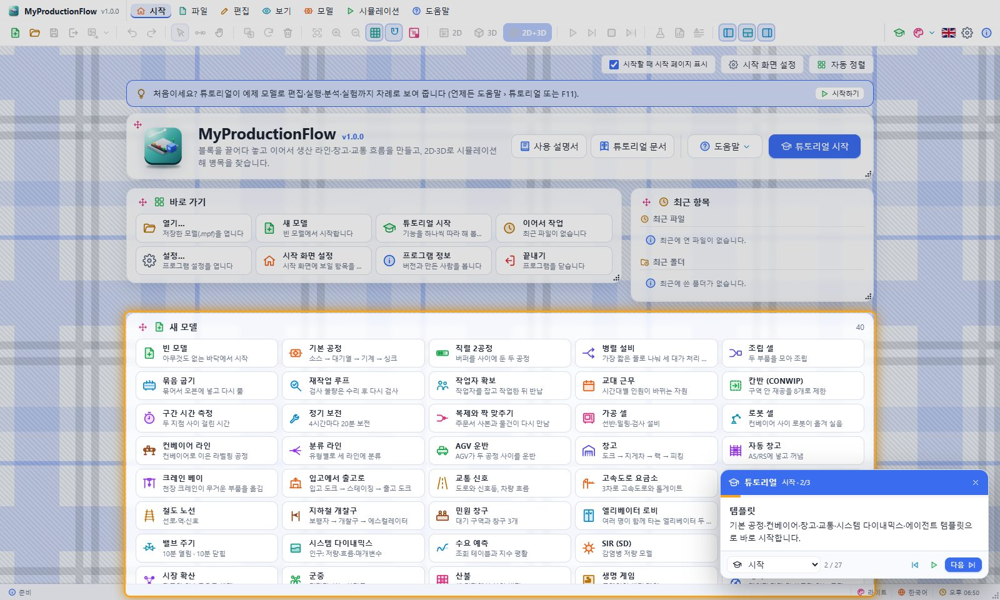
3. 예제 모델
제조·물류·서비스·교통·철도·보행자·SD·유체·에이전트 예제 40개. 클릭하면 열리고 F5로 바로 실행됩니다.
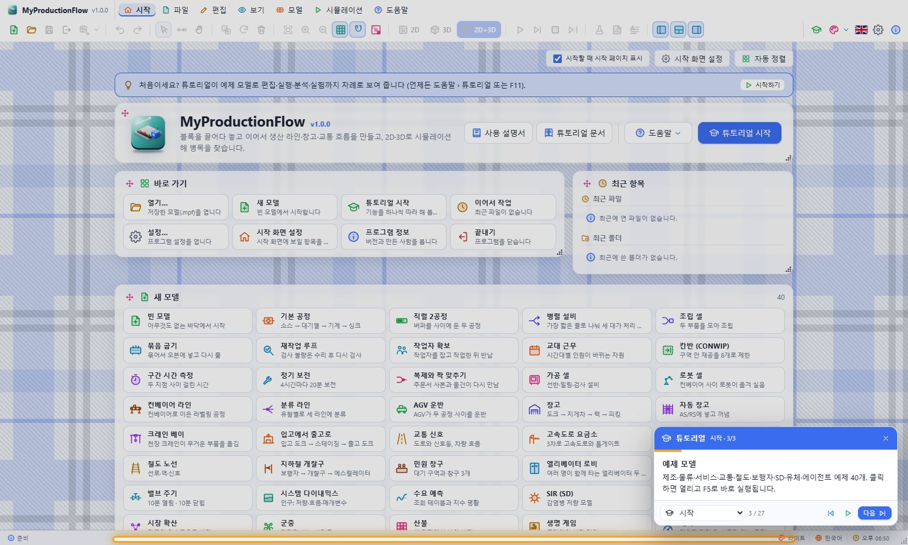
2. 모델 만들기
4. 작업 화면
왼쪽은 블록 라이브러리, 가운데는 2D 편집기와 3D 화면, 오른쪽은 모델 목록과 속성, 아래는 통계·차트·문제·실험입니다.
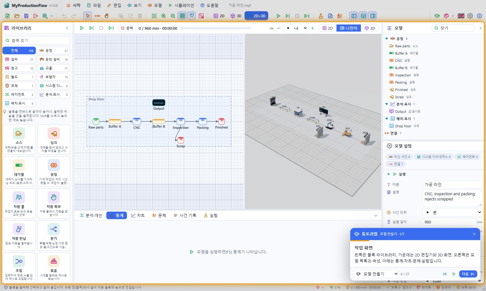
5. 라이브러리
12개 분류 136종 블록: 공정·설비·운반·창고·교통·철도·보행자·유체·SD·에이전트·분석·배치. 캔버스로 끌어다 놓거나 클릭한 뒤 놓을 곳을 클릭합니다.
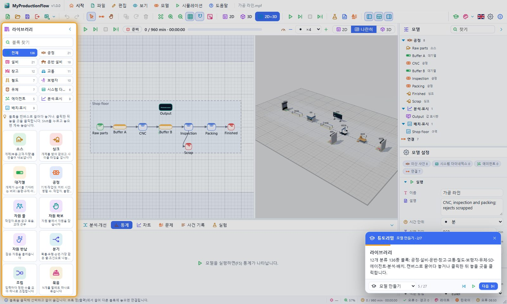
6. 블록 놓기
놓을 곳을 클릭하면 블록이 생깁니다. 블록 하나를 선택한 채 놓으면 자동으로 이어집니다. 컨베이어·도로·벽은 점을 차례로 찍습니다.

7. 연결하기
블록 오른쪽의 초록 점(출구)을 끌어 다음 블록에 놓으면 연결됩니다. 연결 도구(C)로는 블록에서 블록으로 끌면 됩니다.
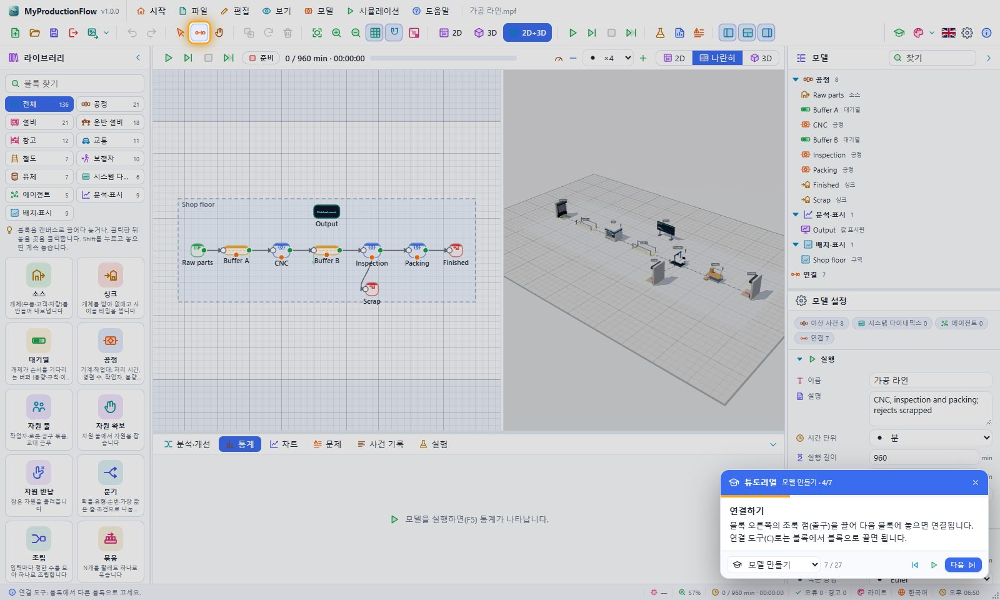
8. 속성
처리 시간 분포(미리보기 막대그래프), 용량, 작업자, 불량률, 고장(MTBF·MTTR)을 바로 편집합니다.
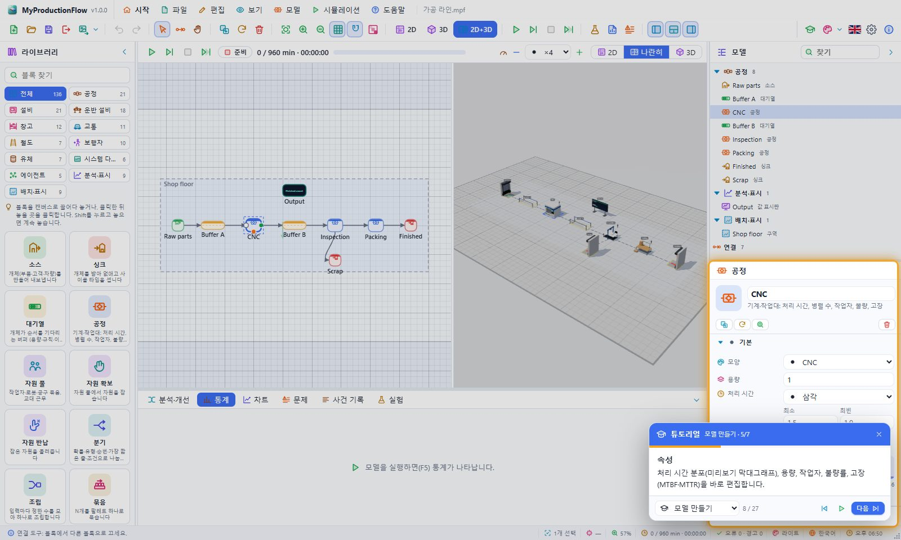
9. 모델 목록
모든 블록을 분류별로 봅니다. 클릭해 선택하고 두 번 클릭하면 그 블록으로 이동합니다.
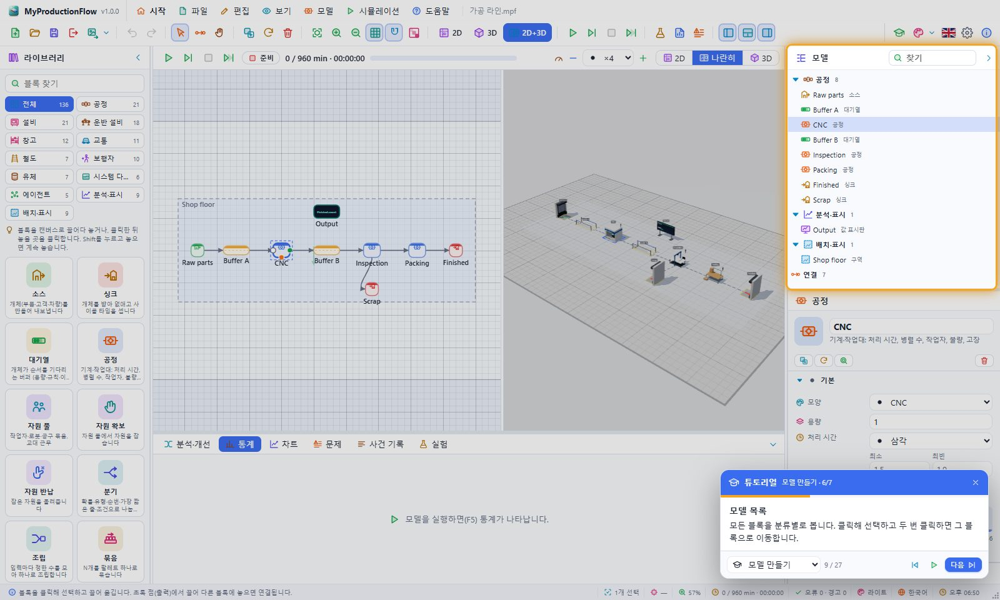
10. 모델 검사
연결 안 된 출구, 틀린 식, 없는 자원 풀 등을 편집할 때마다 찾아 줍니다. 클릭하면 그 블록으로 갑니다.
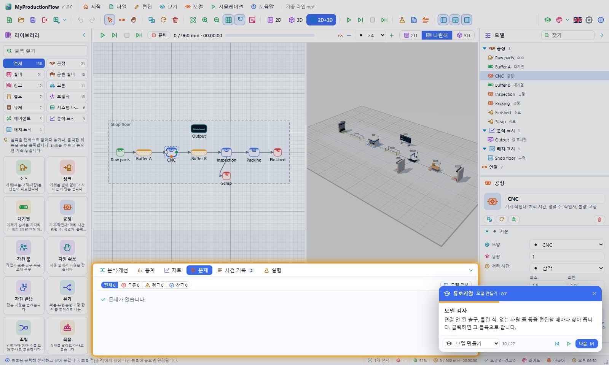
3. 실행과 애니메이션
11. 실행 막대
실행(F5)·한 사건씩(F6)·정지·끝까지(F7). 모델 시간, 진행, 사건 수, 속도를 보여 줍니다.
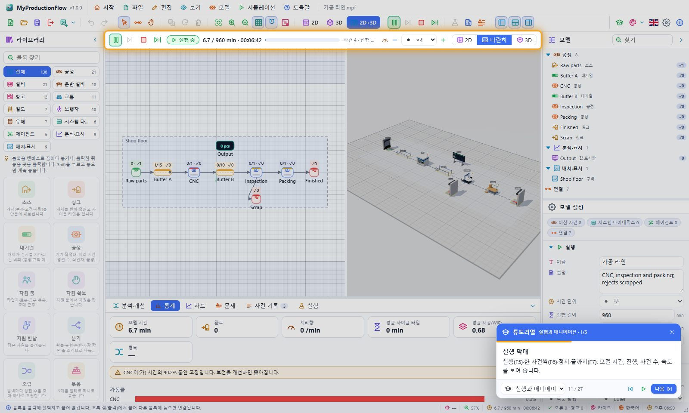
12. 2D 애니메이션
개체가 움직이고 블록이 상태 색(가동 초록·유휴 노랑·막힘 주황·고장 빨강)과 가동률 막대를 보여 줍니다.
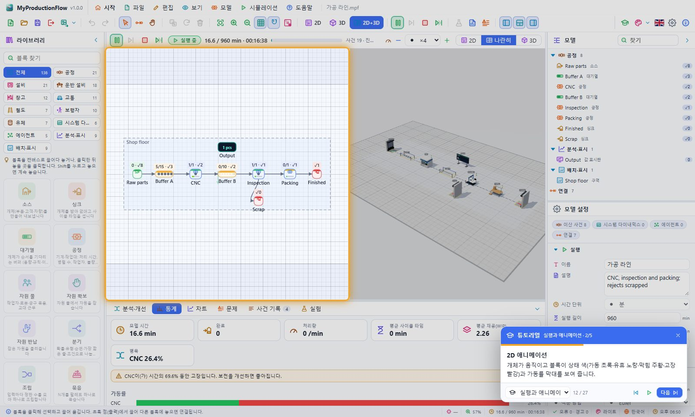
13. 3D 애니메이션
같은 모델을 3D로 봅니다. 끌어서 돌리고, 오른쪽으로 끌어 옮기고, 휠로 확대합니다. 3D에서도 블록을 골라 옮길 수 있습니다.
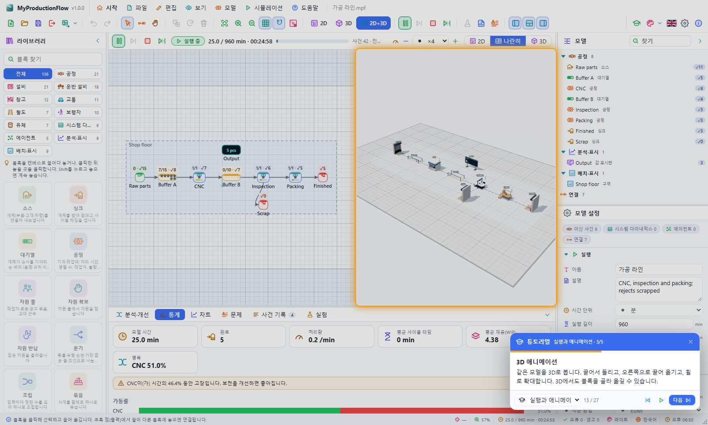
14. 속도
1초에 모델 시간을 얼마나 진행할지 고릅니다. [ ] 키로도 바꿉니다.
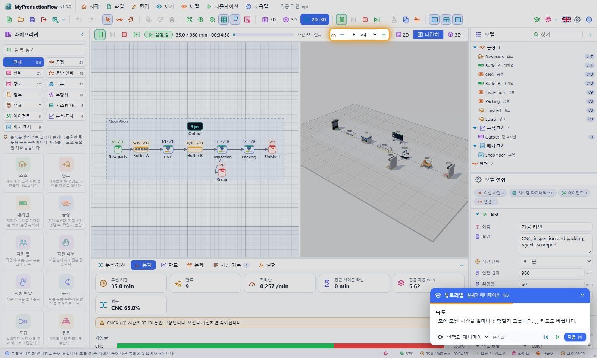
15. 실시간 통계
실행 중 블록을 고르면 가동률·대기·처리량이 실시간으로 보입니다.
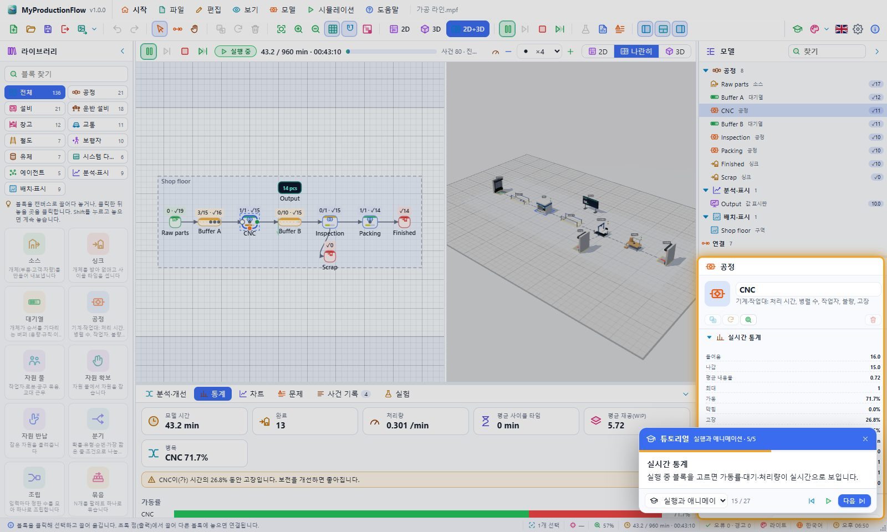
4. 분석과 실험
16. 통계
처리량·사이클 타임·재공·병목 카드, 개선 조언, 공정·대기열·운반별 표가 나옵니다.

17. 분석·개선
실행이 끝나면 하단 패널이 찾은 문제점(병목·막힘·고장·대기·과부하·넘침)을 근거 수치, 원인, 해결 방안과 함께 보여 줍니다. '적용'을 누르면 해결 방안이 모델에 들어갑니다.

18. 차트
모델 차트, 재공과 완료, 공정 상태 타임라인, 사이클 타임 분포. 차트 추가로 원하는 값을 그립니다.
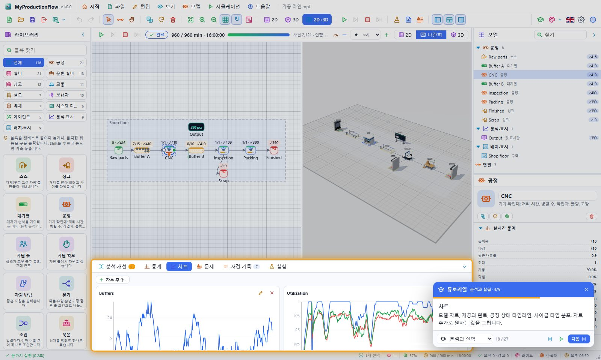
19. 실험
매개변수 변화, 몬테카를로 반복, 최적화로 여러 번 실행해 가장 좋은 값을 찾습니다.

20. 보고서
설정·결과·조언·차트를 담은 보고서를 인쇄하거나 HTML·CSV로 저장합니다.
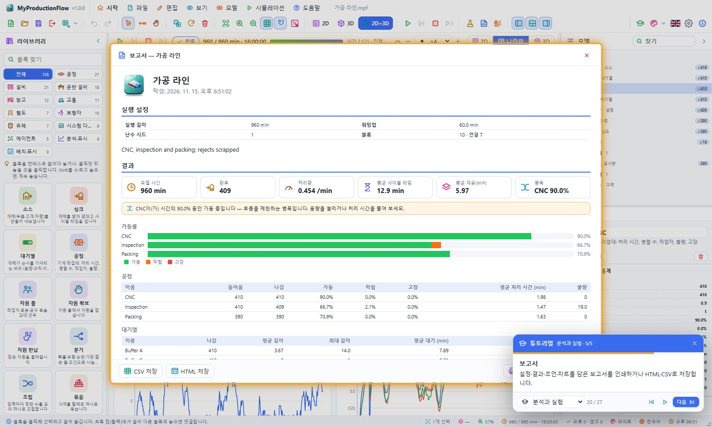
5. SD·에이전트·교통
21. 시스템 다이내믹스
저량·흐름·매개변수로 연속 모델을 만듭니다(Bass 확산). 식에서 이름을 쓰고 실행 중에 매개변수를 슬라이더로 바꿉니다.
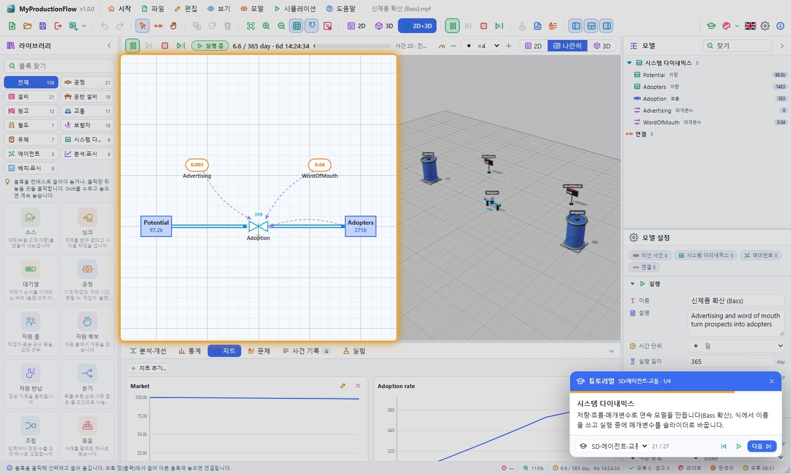
22. 에이전트
움직이는 에이전트가 상태도에 따라 바뀝니다(감염병 SIR): 접촉·비율·시간·조건 전이.

23. 하이브리드
SD 수요가 공정의 도착률을 정하고, 공정 결과가 SD 재고를 채웁니다. 세 방법을 한 모델에서 섞습니다.
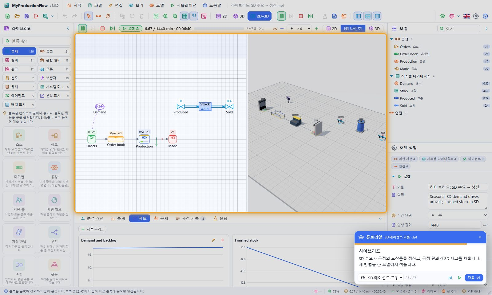
24. 교통
도로·신호등으로 교차로를 만들고 정체를 봅니다.
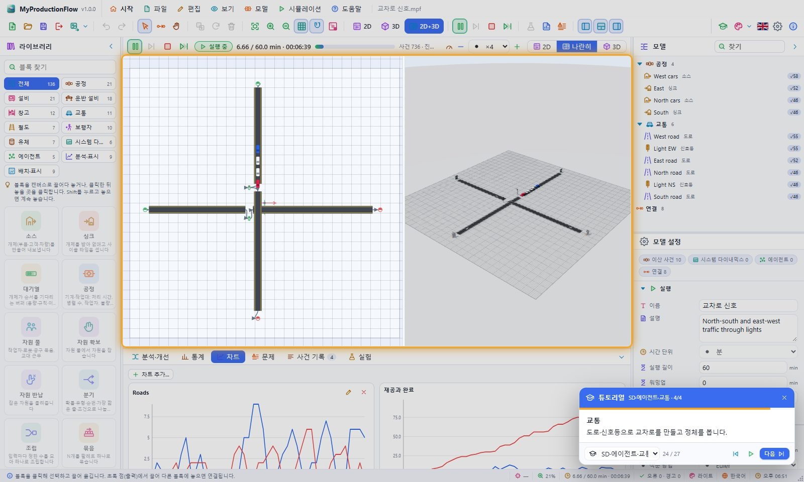
6. 파일과 설정
25. 저장
모델은 .mpf(JSON) 파일로 저장되고 탐색기에서 두 번 클릭하면 열립니다.
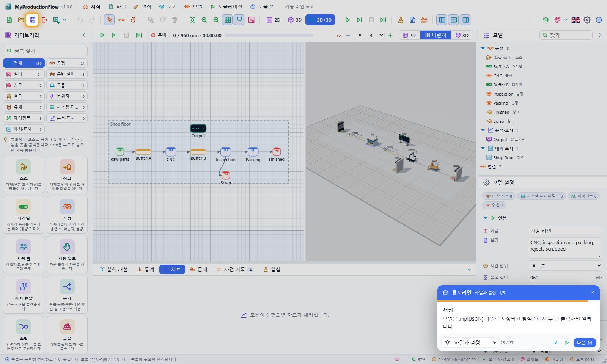
26. 설정
기본 화면, 격자 간격, 포트·이름 표시, 3D 품질과 그림자, 새 모델의 시간 단위를 정합니다.
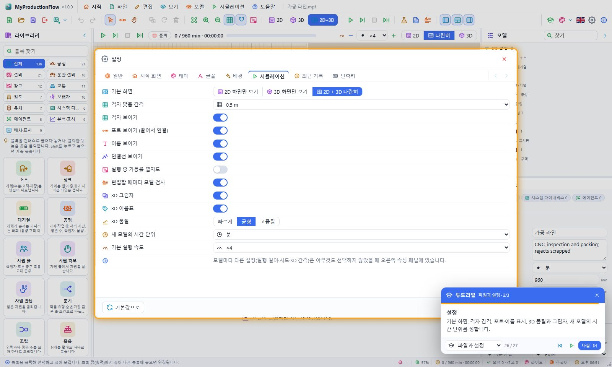
27. 끝
튜토리얼은 언제든 F11이나 이 버튼으로 다시 볼 수 있습니다. 사용 설명서도 도움말 메뉴에 있습니다.
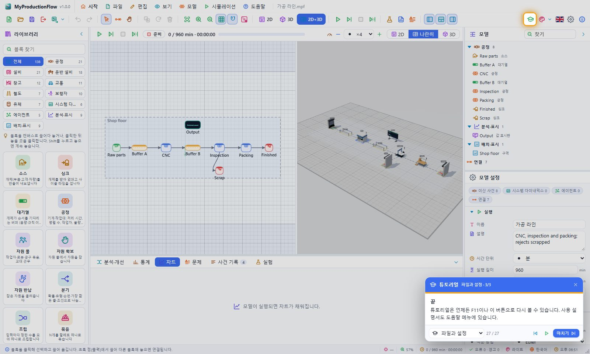
튜토리얼은 도움말 › 튜토리얼(F11)에서 언제든 다시 볼 수 있습니다. 전체를 녹화한 동영상은 도움말 › 튜토리얼 동영상에서 재생합니다 (만든 경우: npm run tutorial:video).